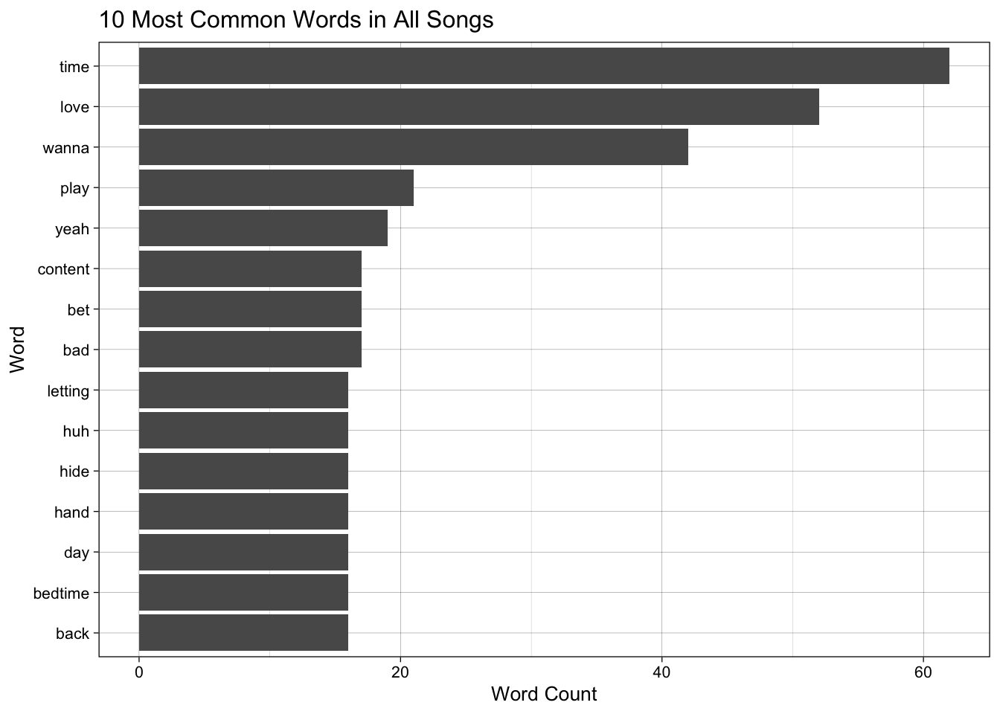

| Song | word | album |
|---|---|---|
| (You’re Better) Than Ever | all | Kiss Yr Frenemies |
| (You’re Better) Than Ever | my | Kiss Yr Frenemies |
| (You’re Better) Than Ever | favorite | Kiss Yr Frenemies |
| (You’re Better) Than Ever | socks | Kiss Yr Frenemies |
| (You’re Better) Than Ever | are | Kiss Yr Frenemies |
| (You’re Better) Than Ever | getting | Kiss Yr Frenemies |
Mini Project #4
Text Analysis
Introduction
One of my favorite bands is called Illuminati Hotties, what I love about them is that all the songs are very different and unique. The main artist is named Sarah Tudzin and in her professional life she is a music producer for many much more popular artists. She also writes and produces her own music and what I think is really cool about it is she just has fun making a bunch of cool and unique sounds, that aren’t dictated by someone else.
Some of my friends and I went to a concert for another artist called Pom Pom Squad almost 4 years ago at this point where we were first introduced to her and have been hooked ever since, one of the things we always talk about is the uniqueness of her music and the interesting and sometimes slightly disturbing lyrics she uses in her songs. This led me to wanting to do a text analysis of her song lyrics.
Data!
There was not a data set of her song lyrics as she is not a very famous artist so i made the maybe silly decision to scrape all the lyrics off the web myself and make my own data set. I did all of this in a document called MP4_cleaning.qmd because it was a lot of code that was not important to the actual project results, it is however linked in my github and on this website page.
What I did was used the web page scraping functions that we made in class to make a similar function that I could input the names of the songs into. I first tried to do all the songs at once but was running into issues with my IP address getting blocked from requesting too much data so I had to break down the songs into smaller requests and I made 10 individual csv files that I then bind_row() into one full data set. This however was only the names of the songs and the lyrics and I wanted an album name which was a little more complicated because the website I used to get the lyrics did not have the album name on the page that the song lyrics were on. So I just did a bunch of if else statements to add the new column. This definitely was not the most efficient method of doing this but its what I did because it was more familiar for a part of the project that was completely unnecessary.
This is what the data set looks like after I read it into this document and did some final cleaning!
Illuminati Hotties have 5 albums and a couple singles that I am analyzing together as one “album”.
Questions
Some things I want to explore with in this data set are:
- Most common words in general, in each song and in each album
- Sentient analysis of each album
- Network Graph and Correlation
Word Counts
I first wanted to just look at the most common word in all of her songs in general and found what was expected, words like “I”, “you” and “the” were the most commonly used words.
| album | word | n |
|---|---|---|
| Power | i | 121 |
| let me do one more | i | 113 |
| Kiss Yr Frenemies | i | 100 |
| Single | i | 70 |
| FREE I.H: This Is Not the One You’ve Been Waiting For | you | 59 |
| Nickel on the Fountain Floor | you | 17 |
To look at just the most common useful words I anti_joined my data set with the set of of smart stop words. Also some of the most common words are not full words and are sounds as words, so I filtered them out using str functions and then looked at the most common words in each album again.
| album | word | n |
|---|---|---|
| FREE I.H: This Is Not the One You’ve Been Waiting For | content | 17 |
| Kiss Yr Frenemies | time | 15 |
| Nickel on the Fountain Floor | 777 | 7 |
| Power | love | 36 |
| Single | miss | 11 |
| let me do one more | wanna | 23 |
| Song | word | n |
|---|---|---|
| YSL | play | 20 |
| content//bedtime | content | 17 |
| I Would Like, Still Love You | love | 16 |
| MMMOOOAAAAAYAYA | yeah | 16 |
| freequent letdown | letting | 16 |
| u v v p | hide | 16 |
| Joni: LA's No. 1 Health Goth | bet | 15 |
| free ppls | free | 14 |
| Patience | time | 13 |
| WATTBL | time | 13 |
| (You're Better) Than Ever | ahh | 12 |
| Sleeping In | sleeping | 12 |
| b yr own b | fine | 12 |
| Cheap Shoes | wear | 10 |
| Falling In Love With Somebody Better | love | 10 |
| I Wanna Keep Yr Dog | dog | 10 |
| You Are Not Who You Were | hand | 10 |
| superiority complex (big noise) | real | 10 |
| Pressed 2 Death | bad | 9 |
| Power | power | 8 |
| Truck | give | 8 |
| 777 | 777 | 7 |
| December | december | 7 |
| Kickflip | day | 6 |
| Pool Hopping | hoppin | 6 |
| Shape Of My Hands | thinking | 6 |
| The L | love | 6 |
| The Sway | leaning | 6 |
| Wreck My Life | life | 6 |
| boi | boi | 6 |
| Declutter | anymore | 5 |
| Paying Off The Happiness | paying | 5 |
| will i get cancelled | man | 5 |
| Cuff | cuff | 4 |
| Everything Changes | lose | 4 |
| Protector | protector | 4 |
| The Rules | read | 4 |
| Threatening Each Other re: Capitalism | ahh | 4 |
| Throw (Life Raft) | back | 4 |
| ppl plzr | brand | 4 |
| For Cheez (My Friend, Not The Food) | everything's | 3 |
| Kiss Yr Frenemies | wanted | 3 |
| Knead | knead | 3 |
| Rot | ball | 3 |
| Sandwich Sharer | back | 3 |
| What's the Fuzz | blinder | 3 |
| Can't Be Still | moving | 2 |
| Didn't | unenthused | 2 |
| Growth | pretend | 2 |
| K - HOT AM 818 | hot | 2 |
| Toasting | biting | 2 |
| free dumb | fucking | 2 |
| melatonezone | barely | 2 |
| reasons 2 live | good | 2 |
Graphs to visualize the most common words!

Sentiment Analysis
I am really curious about the sentiment analysis of her songs because they lyrics are seemingly random and make not a lot of sense on their own. Also compared to the vibe of the song they sentiment seems to be all over the place. Something I would love to do in the future is add variables that relate to the “vibe” of the song similar to the Spotify data that we have used, there is an energy variable and a couple others that would be interesting to look at compared to the actual text sentiment analysis.
| album | sentiment | n |
|---|---|---|
| FREE I.H: This Is Not the One You’ve Been Waiting For | trust | 56 |
| Kiss Yr Frenemies | anticipation | 63 |
| Nickel on the Fountain Floor | sadness | 15 |
| Power | joy | 59 |
| Single | anticipation | 33 |
| let me do one more | fear | 48 |
| album | value | n |
|---|---|---|
| FREE I.H: This Is Not the One You’ve Been Waiting For | 1 | 37 |
| Kiss Yr Frenemies | 2 | 32 |
| Nickel on the Fountain Floor | -2 | 8 |
| Power | 3 | 44 |
| Single | -2 | 28 |
| let me do one more | -1 | 31 |
| album | sentiment | n |
|---|---|---|
| FREE I.H: This Is Not the One You’ve Been Waiting For | positive | 85 |
| Kiss Yr Frenemies | negative | 61 |
| Nickel on the Fountain Floor | negative | 16 |
| Power | negative | 111 |
| Single | negative | 59 |
| let me do one more | negative | 84 |
Correlations
I also wanted to look at the correlations between some of the most common words in the songs.
Fun Fact!!
In the song “Pool Hopping” the first verse goes:
In every life there is a bell One rounded curve of time or tell I’m on the left half looking Over, over, over, uh-huh
Referencing being on the left side of a a bell curve! That’s statistical and semi-relevant!